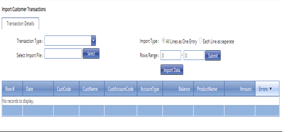

Introduction
MFI Expert comes in two forms:
- A Web Application
- A Mobile Application
The mobile Application is designed for loan Officers.
For security purposes, managerial actions are reserved for the web application only.
Web App
You can access the Web Application at : mfiexpert.com .
Click on the log in /sign up button at the top right .
On the log in page enter the Customer code, your e-mail and your password to log in.
manage users
This is a feature under the security tab that allows the administrator to manage users working on the system.
The administrator is able to perform the following tasks;
- Setting up Roles
- Creating New users
How to create User Roles
The New Role user interface on the website.
- On the the main menu click on the Security tab .
- On the drop down menu that appears click on manage roles.
- On the pop up screen click on the new roles tab on the top left bar.
- On the table that appears enter the description of the new role you want to create.
- Under the permissions bar check by ticking the permissions you want to give to this role in all the fields I.e dashboard, general setup…
- Click on the save button and the role is created.
How to create a New User
 Creating a New User
Creating a New User
- Log on into the system through the web application.
- On the main menu which appears on the left side of the screen click on the security tab.
- Under the security tab click on manage users.
- On the pop up screen click on new user at the top left bar.
- Under the user details page key in the username,the email and the mobile number.
- Specify the designation of the user I.e accountant.
- Under the license type check the modules the user is allowed to work on I.e all modules.
- If the user is an administrator check the mark as Admin tab to enable.
- Click on the save button to create the user.
Assigning Roles
 How to assign roles
How to assign roles
- On the same new user page click on the roles tab at the top bar.
- On the pop up screen check the roles to assign to the user.
- Click on the save button
Assigning Branches
 This is the image caption
This is the image caption
- Still on the same new user page click on the branches tab at the top bar.
- On the pop up screen check the branches that the user can access.
- Click on the save button.
General Configurations
On the main menu the general setup feature enables the administrator to customize the system in accordance to the needs of his/her company.
This feature allows creation of:
1. Regions
2. Branches
3. Gl accounts
4. Loan products
5. Savings products
6. Charges
7. Referral type setup
8. Referral type lists
Setting Up Regions
Setting up Regions
- On the main menu click on general setup tab.
- Under the general set up drop down click on regions.
- On the regions page click on the new region tab at the top left bar..
- On the pop up screen type in the region name.
- Click on the save button to create the region.
Setting up Branches
 Setting up Branches
Setting up Branches
- On the main menu click on general setup tab.
- On the general setup tab drop down click on branches.
- On the branches page click on new branch at the top left bar.
- On the new branch screen type in the branch name.
- Select the region under which the branch falls into.
- Check the branch type as branch or an agency.
- Click on the save button to create the branch.
Creating GL Accounts
Customizing GL Accounts
Setting up Saving Products
Setting up Savings Product
- On the main menu click on general setup.
- On the general setup drop down click on savings. products.
- On the page that appears click on new savings product at the top left of your page.
- On the pop up screen type in the product name I.e Christmas savings.
- On the m-pesa identifier put a description to be used when deposits are made via m-pesa.
- Select the payable account to receive the deposits.
- Check the consider for guarantee tab if the savings account is used by the company to determine in issuing a loan.
- If there is an interest charged on the product indicate on the apply interest tab.
- Indicate the interest rate to be applied accordingly.
- Indicate the amortization period as either daily, monthly…
- If there is an interest on the product indicate the GL account for it.
- Click on the save button to create the product.
Adding Charges
Adding Charges to a Savings Product
- On the savings product page click on the newly created product I.e Christmas Savings.
- On the Christmas savings page click on applicable charges tab at the top bar.
- On the new page that appears click on add new charge.
- On the row that appears enter the description of the charge to be added.
- Select the GL account to deduct the charges from.
- Type in the requirement for the charges.
- Specify the calculation type for the charge I.e fixed, percentage…
- Enter the amount of the charge in the case of fixed charge.
- Click on the save button to add the charges.
Setting up Loan Products
 Loan Product Setup
Loan Product Setup
-
On the main menu click on general setup tab.
-
On the drop down menu click on loan products.
-
On the loan products page click on new loan product.
-
On the table that appears type in the product name.
-
Specify the product category I.e loans,refinance.
-
Enter the product level I.e level 1/2 according to what the Sacco offers.
-
Check the allow top up tab if you accommodate loan top ups.
-
Check the allow partial tab to allow disbursal in bits.
-
Check the stock based tab if you are delivering an item to the customer instead of money.
-
Indicate if there is any interest to be charged on the product.
-
Indicate the interest type I.e reducing, flat.
-
Indicate the interest rate per annum.
-
Select the amortization frequency.
-
Indicate the installment frequency either weekly, monthly.
-
Indicate the installment grace period if you offer any.
-
Enter the fixed charge on installment.
-
Key in the receivable account for the loan.
-
Indicate also the charge receivables account for the charges.
-
Indicate the interest accounts.
-
Key in the write-off principle account.
-
Key in the write-off interest account.
-
For instances of m-pesa payments put an m-pesa identifier.
-
Indicate the delinquency grace days if you offer any.
-
Click on the save button to create the loan product.
Adding Charges
 Adding Charges to a Loan Product
Adding Charges to a Loan Product -
Click on the loan products tab and select the newly created product I.e main loan.
-
On the main loan page that opens click on the charges tab at the top bar .
-
Add the charges that apply on this loan product.
-
Click on the save button to add the charges.
Setting Loan Limits & Terms
 Assigning Loan Limits & Terms to a Loan Product
Assigning Loan Limits & Terms to a Loan Product -
Again on the newly created loan product I.e main loan.
-
Click on the loan limits & terms for the loan product.
-
On this page enter the minimum amount to lend and indicate the minimum and maximum installments for repayment.
-
Enter the maximum amount to lend and also indicate the minimum and maximum installments for the same.
-
Click on the save button to add the limits and terms.
Selecting the Branch
 ***Assigning a Loan Product to a Branch ***
***Assigning a Loan Product to a Branch ***
- On the same loan product page click on the branches tab on the top bar.
- Select the branch under which you want the loan product.
- Click on the save button for it to apply.
Setting Up Suppliers
Setting up Charges
Setting up Charges
- On the main menu click on general setup tab.
- On the general setup drop down menu select on charges.
- On the charges page click on new charges tab at the top left bar.
- On the new screen type in the charge name.
- Select the General Ledger (GL) account.
- Indicate the default amount to charge.
- Click on the save button to create the charge.
Setting up Referral Types
 Setting up Referral Types
Setting up Referral Types
- On the main menu click on general setup.
- On the drop down menu select referral type setup tab.
- On the referral type setup page click on new referral type tab at the top bar.
- On the new page key in the new referral type name.
- Tick on whether to use in the referral lists.
- Click on the save button.
Setting up Referral Type Lists
Setting up Referral Type Lists
- On the main menu click on general setup.
- On the drop down menu select referral type list tab.
- On the referral type list new page that appears click on customize tab at the top left.
- On the new page check or tick the referral type lists that you want to appear on specific pages.
- Click on the save button to effect.
Customer Setup
This feature allows the user to perform all the necessary activities pertaining to the customer.
The user can perform the following tasks;
- Onboarding New Customer Groups
- Onboarding New Customers
- Creating a New Loan
- Performing Loan Disbursals
- Perform Customer Modifications
- Perform Group Modifications
- Create Loan Officer Targets
- Collateral Tracking
- Cheques Tracking
Onboarding New Customer Groups
This is the image caption
- On the main menu click on the customer setup tab.
- Under customer setup click on Groups.
- On the groups page click on new customer group at the top bar.
- On the new page type in the name of the group.
- Identify the branch into which the group falls under.
- Distinguish the group type into either normal or supa group.
- Indicate the referral type if any i.e. ads, none, existing member.
- Enter the referral id as the referral value.
- Indicate the meeting week for the group i.e. 1st, 2nd.
- Indicate the meeting day.
- Select the meeting time for the group.
- Click on the save button to create the group.
Document Uploads
 Uploading Documents
Uploading Documents
- At the bottom right of the page click on the documents tab to upload the necessary files
- On the pop up page select the template you want to add i.e. group pin certificate
- Enter a description on the same
- Select the document you want to upload from your device
- Click on the upload tab
- Then click on submit for approval
Onboarding a New Customer
Onboarding a New Customer
- Under the customer setup tab on the main menu click on customers tab.
- On the pop up page click on new customer tab at the top left edge.
- On the new page enter the full names of the client.
- Specify on the customer type whether the client belongs to a group or otherwise an individual.
- Indicate the branch for the new customer.
- If the customer falls into any group, type in the name of the group.
- Note the customer's member designation in the group i.e. member,chairman.
- On the personal details key in the date of birth of the customer.
- Select the gender.
- Select the marital status.
- Key in the customer identification number (ID).
- Add the mobile number.
- Enter the e-mail address.
- If married, enter the spouse ID and contact.
- On the next of kin details establish the relationship with the kin.
- Enter the name of the kin.
- Enter the kin's ID number.
- Also type in the kin's contact number.
- Click on the save button to create the customer.
How to create a New Loan
Creating a New Loan
- On the main menu click on the customer setup tab.
- On the drop down menu that appears select on loan accounts tab.
- On the loan accounts page click on new loan tab at the top left bar.
- On the new page type in the identification number of the customer.
- Automatically the system populates the customer data.
- Select the referral type.
- Select the disbursal mode to be used.
- Enter the disbursal details with respect to the mode.
- Indicate the product.
- Select the loan purpose.
- Enter the loan amount.
- Indicate the number of installment for repayment.
- Enter the interest rate to be charged annually.
- Click on the save button.
- Click on the submit for approval button.
How to make Loan Disbursals
How to make a Loan Disbursal
-
On the main menu click on customer setup tab.
-
On the drop down menu select loan disbursal.
-
On the loan disbursal page click on the new disbursal tab.
-
On the new page that appears select the branch.
-
Select the mode of disbursal.
-
Click on the refresh button.
-
How to make a Loan Disbursal
-
All loans which fall under the select mode will appear below.
-
Select the loan/s for disbursal by ticking on them.
-
Click on the save button.
Customer Modification
Customer Modification
- On the main menu click on customer setup tab.
- On the drop down menu click on the customer modification tab.
- On the customer modification page click on the new modification tab at the top left bar.
- On the new page key in the customer code from the existing customer list and click on find.
- The system automatically populates the customer data as shown above.
- Update or modify the necessary fields.
- Click on the save button.
- Under the Docs tab at the bottom upload any necessary documents.
How to make Group Modification
 Group Modifications
Group Modifications
- On the main menu click on customer setup tab.
- On the drop down menu click on the group modification tab.
- On the group modification page click on the new modification tab at the top left bar.
- On the new page key in the group code from the existing groups list and click on find.
- The system automatically populates the group’s data as shown above.
- Update or modify the necessary fields.
- Click on the save button.
- Under the Docs tab at the bottom upload any necessary documents.
Loan Officer Targets
Setting up Targets for Loan Officers
- On the main menu click on customer setup tab.
- On the drop down menu select loan officer targets tab.
- On this page a list of all loan officers will appear.
- Click on the write icon on the far right of the row.
- Enter the loan targets for each officer monthly.
- Check the tick button to save.
Collateral Tracking
Cheque Tracking
Customer Transactions
This feature in the system allows the user to perform all necessary activities related to account transactions.
The user can perform the following tasks;
- Deposits
- Transfers
- Forfeitures
- Refunds
- Writeoffs
- Adjustments
- Import Transactions
- Branch Movements
How to initiate Customer Deposits
Making Customer Deposits
- On the main menu click on customer transactions tab.
- On the drop down menu select deposits.
- On age click on new deposits on the top left bar.
- On the new page enter the mode of payment i.e. bank, m-pesa.
- Enter the account into which the payment was made.
- Key in the bank reference number.
- Enter the amount paid.
- Click on add tab on the menu just below.
- On the pop up row select the item paid for i.e. loan, charge, saving….
- Enter the customer name.
- Specify the account to receive the payment i.e. loan processing fees, insurance fees…
- Enter the amount paid.
- Mark the tick button on the right side of the row for the system to pick.
- If you have multiple entries click on add and repeat the procedure.
- Click on the save button to enter the deposits.
- Click on the submit for approval button for approvals.
How to perform Transfers
How to Perform transfer Transactions
- On the main menu click on the customer transactions tab.
- On the drop down menu select transfers.
- On the transfers page click on new transfer tab at the top let bar.
- On the new page enter the receiving customer name.
- Select the receiving account of the customer.
- Key in the reference code respectively.
- Enter the amount to be received.
- Indicate the branch involved.
- At the bottom bar click on the add button.
- On the row that appears indicate the account type to transfer from.
- Enter the sending customer name.
- Indicate the account you are transferring from.
- Enter the amount to send.
- Check the tick button on the far right of the row for the system to pick.
- In the case of multiple entries add more rows by clicking on add button and repeat the procedure.
- Click on the save button and the transfer is submitted for approval.
How to perform Forfeitures
Performing Forfeitures
- On the main menu select customer transactions.
- On the drop down menu select forfeitures.
- On the forfeitures page click on new forfeiture tab at the top left bar.
- On the new page enter the name of the receiving customer.
- Indicate the loan account to benefit.
- Key in the forfeit reasons.
- Enter the forfeit reference number.
- Indicate the amount to be received.
- On the tab below click on the add button.
- On the row that appears enter the name of the account to credit.
- Select the account.
- Enter the amount to forfeit.
- Check the tick button at the far end of the row for the system to pick.
- Click on the save button to submit for approval.
How to make Refunds
How to make Refunds
- On the main menu click on the customer transactions tab.
- On the drop down menu select refunds tab.
- On the refunds page that opens click on new refund tab at the top left bar.
- On the page that opens select the payment mode to make the refund.
- Select on the account respectively.
- Select the branch.
- Select the refund reasons.
- Enter the amount to refund.
- At the bottom bar click on the add button.
- On the row that appears enter the name of the customer to refund.
- Select the account to cash from i.e. member deposits, Christmas savings.
- Enter the amount to refund.
- Check the tick button on the far right of the row.
- Click on the save button to submit for approval.
How to perform Writeoffs
How to perform Writeoffs
- On the main menu click on customer transactions.
- On the drop down menu select write offs.
- On the write offs page click on the new write off tab at the top left bar.
- Under the new write off page enter the name of the customer.
- Select the loan account to write off.
- The system will automatically fill in the O/S principle and the interest accumulated together with the total amount.
- Click on the save button to submit for approval.
How to perform Adjustments
How to make Adjustments
- On the main menu click on the customer transactions.
- On the drop down menu select adjustments.
- On the adjustments page click on the new adjustment tab at the top left bar.
- On the new page enter the mode in which to make the adjustment.
- Enter the income account to receive the adjustment.
- Enter the reference.
- Indicate the amount.
- Select the branch involved.
- Write a narration or notes on the adjustment.
- At the bottom tab click on the add button.
- On the row that appears enter the name of the customer.
- Select the account.
- Enter the amount.
- Check the tick button at the far end of the row.
- Click on the save button to submit for approval.
Importing Transactions
 How to Import Transactions
How to make Branch Movements
 Branch Movements
Branch Movements
- On the main menu click on customer transactions.
- On the drop down menu select branch movements.
- On the customer branch movements page click on new movement at the top left bar.
- On the new page enter the type to move i.e. customer, customer group.
- Enter the name of the customer/group to move.
- The system automatically generates the current branch for the above.
- Enter the new branch.
- Click on the save button.
Mobile App
Test Youtube Embedding
3 plain examples:
I will use the youtube ID : DNAiW4lZgyM
URL link : https://youtu.be/DNAiW4lZgyM

Test .GIF embeddings

Test Image embeddings
This is the image caption